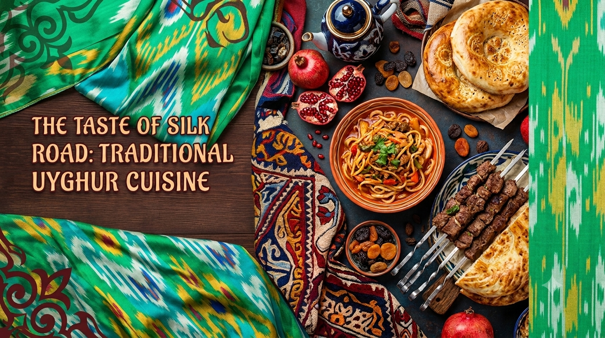

Our story
A table set the Uyghur way
Arzu means "longing" — for home, for a familiar meal, for a table where tea is always poured for the next guest. That's the feeling we build every service: noodles pulled by hand, bread baked to order, and lamb tended over open coals the way it's done across the Uyghur homeland.
Every recipe here has been passed down rather than invented — adjusted only by the hands that have made it a thousand times before. We hope you leave the table the way guests always have: fed, unhurried, and already planning your next visit.
100%
Made in-house
3
Generations of recipes
7
Days a week open